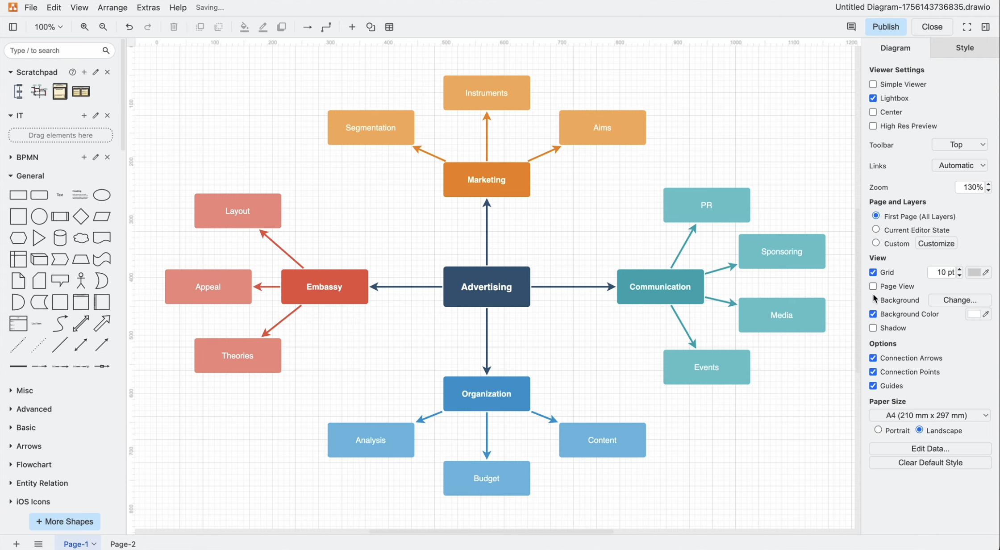
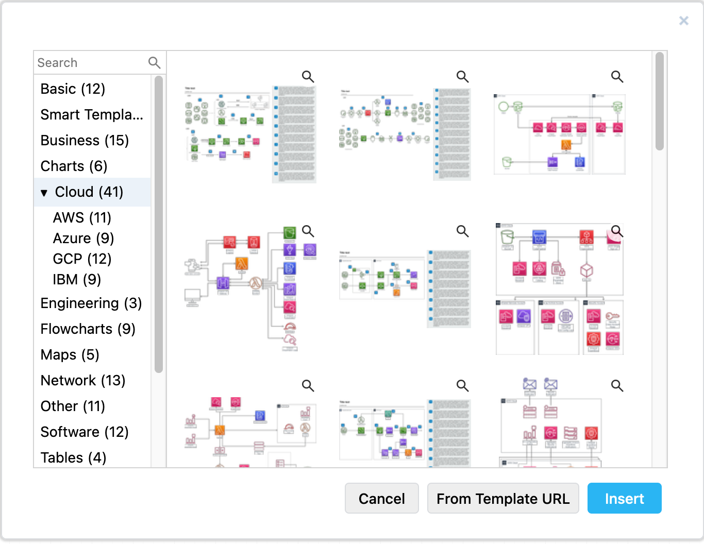

Maksim Kaart
draw.io (diagrams.net)
Tasuta diagrammide loomise tööriist, millega saab teha skeeme, voodiagramme, mõistekaarte ja tehnilisi jooniseid nii veebis kui ka töölauaäpina.
Lühike ajalugu
- Kes lõi: JGraphi meeskond, tänaste nimedega draw.io Ltd ja draw.io AG.
- Millal arendus algas: draw.io veebileht toob välja, et rakendus avab faile juba aastast 2005.
- Miks see loodi: eesmärk oli pakkuda tasuta ja lihtsalt kasutatavat diagrammitööriista, kus kasutaja saab oma failid ise hallata.
- Kas arendus jätkub: jah, rakendust ja selle GitHubi väljalaskeid uuendatakse endiselt aktiivselt.
Peamised funktsioonid
draw.io sobib protsessiskeemide, UML-diagrammide, andmebaasimudelite, kasutajateekondade ja mõistekaartide tegemiseks. Tugevuseks on suur kujundite kogu, mallid, eksport erinevatesse formaatidesse ning see, et faile saab hoida näiteks Google Drive'is, OneDrive'is, GitHubis või oma arvutis.
- Tasuta ja veebipõhine
- Mallid ja kujundite kogud
- Eksport PNG, PDF ja SVG
- Töötab ka offline-versioonina

